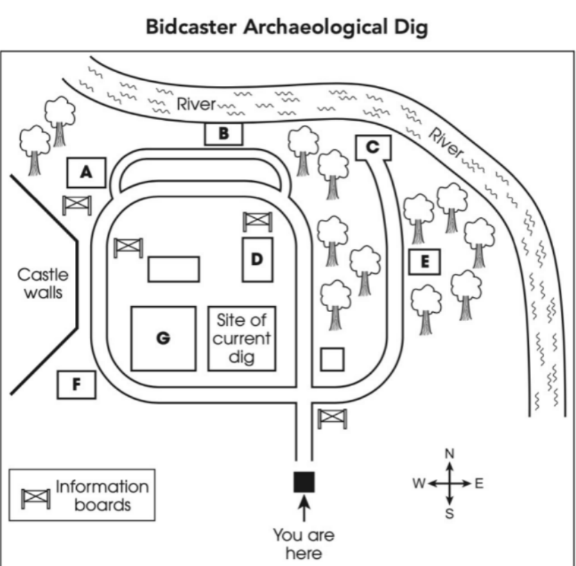
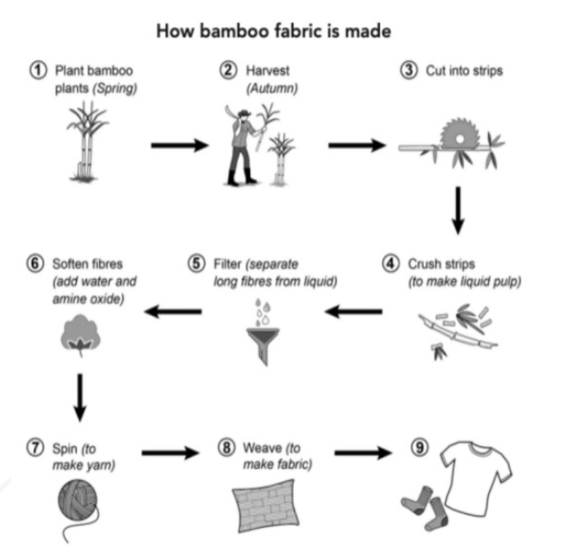

Welcome to Mock Test 1
This interactive dashboard provides a comprehensive overview of your testing environment. Designed to evaluate English as a langue vivante, this platform moves beyond rote memorization to assess your holistic linguistic capabilities.
Examination Structure
🎧 Section 1: Listening
40 Questions | Approx. 30 Minutes
Evaluates your comprehension of spoken English across four distinct audio contexts, ranging from everyday social interactions to academic lectures.
📖 Section 2: Reading
40 Questions | 60 Minutes
Assesses your ability to grasp primary concepts, details, and implied meanings across three rigorous academic texts.
📝 Section 3: Writing
2 Tasks | 60 Minutes
Requires a synthesized factual summary of visual data (Task 1) and a well-reasoned discursive essay on a contemporary issue (Task 2).
🗣 Section 4: Speaking
1-on-1 Interview | 11-14 Minutes
A live evaluation of your spoken fluency, coherence, and lexical resource, scheduled directly with your examiner.
Section 1: Listening
Assess your ability to understand spoken English. You will encounter conversations and monologues.
Part 1: Furniture Rental Companies
Complete the table below. Write ONE WORD AND/OR A NUMBER for each answer.
| Name of company | Information about costs | Additional notes |
|---|---|---|
| Peak Rentals | Prices range from $105 to $ per room per month. | The furniture is very . Delivers in 1-2 days. Special offer: free with every living room set. |
| and Oliver | Mid-range prices. 12% monthly free for 5. |
Also offers a cleaning service. |
| Larch Furniture | Offers cheapest prices for renting furniture and items. | Must have own . Minimum contract length: six months. |
| Rentals | See the for the most up-to-date prices. | are allowed within 7 days of delivery. |
Part 2: Community Project
11. Who was responsible for starting the community project?
12. How was the gold coin found?
Bidcaster Archaeological Dig

Questions 17-20: Label the map below. Type the correct letter, A-G.
Part 3: Theatre Programmes
Questions 21-26: Choose the correct letter, A, B or C.
21. Finn was pleased to discover that their topic
Questions 27-30: What comment is made about the programme for each of the following shows?
Choose FOUR answers from the box and select the correct letter, A-F.
Comments about programmes
- A. Its origin is somewhat controversial.
- B. It is historically significant for a country.
- C. It was effective at attracting audiences.
- D. It is included in a recent project.
- E. It contains insights into the show.
- F. It resembles an artwork.
Part 4: Inclusive Design
Complete the notes below. Write ONE WORD ONLY for each answer.
Inclusive design
Definition
- Designing products that can be accessed by a diverse range of people without the need for any
- Not the same as universal design: that is design for everyone, including catering for people with problems.
Examples of inclusive design
- which are adjustable, avoiding back or neck problems
- in public toilets which are easier to use
- To assist the elderly:
- designers avoid using in interfaces
- people can make commands using a mouse, keyboard or their
Impact of non-inclusive designs
- Access
- Loss of independence for disabled people.
- Safety
- Seatbelts are especially problematic for women.
- PPE jackets are often unsuitable because of the size of women's
- PPE for female officers dealing with emergencies is the worst.
- Comfort in the workplace
- The in offices is often too low for women.
Section 2: Reading
You have 60 minutes to complete all three passages. Toggle between the passages using the navigation below.
How tennis rackets have changed
In 2016, the British professional tennis player Andy Murray was ranked as the world's number one. It was an incredible achievement by any standard – made even more remarkable by the fact that he did this during a period considered to be one of the strongest in the sport's history, competing against the likes of Rafael Nadal, Roger Federer and Novak Djokovic, to name just a few.
Of the changes that account for this transformation, one was visible and widely publicised: in 2011, Murray invited former number one player Ivan Lendl onto his coaching team – a valuable addition that had a visible impact on the player's playing style. Another change was so subtle as to pass more or less unnoticed. Like many players, Murray has long preferred a racket that consists of two types of string: one for the mains (verticals) and another for the crosses (horizontals).
[Full text embedded here during production...]
Do the following statements agree with the information given? Write TRUE, FALSE, or NOT GIVEN.
1. People had expected Andy Murray to become the world's top tennis player for at least five years before 2016.
Complete the notes. Choose ONE WORD ONLY.
The tennis racket and how it has changed
- Mike and Bob Bryan made changes to the types of used on their racket frames.
- Players were not allowed to use the spaghetti-strung racket because of the amount of it created.
The pirates of the ancient Mediterranean
A When one mentions pirates, an image springs to most people's minds of a crew of misfits, daredevils and adventurers in command of a tall sailing ship in the Caribbean Sea. Yet from the first to the third millennium BCE, thousands of years before these swashbucklers began spreading fear across the Caribbean, pirates prowled the Mediterranean, raiding merchant ships and threatening vital trade routes.
Which paragraph contains the following information? Write the correct letter, A-G.
The persistence and peril of misinformation
Misinformation – both deliberately promoted and accidentally shared – is perhaps an inevitable part of the world in which we live, but it is not a new problem. People likely have lied to one another for roughly as long as verbal communication has existed. Deceiving others can offer an apparent opportunity to gain strategic advantage...
Complete the summary using the list of phrases, A-J.
Do the following statements agree with the claims of the writer? Write YES, NO, or NOT GIVEN.
37. Campaigns designed to correct misinformation will fail to achieve their purpose if people are unable to understand them.
38. Attempts to teach elementary school students about misinformation have been opposed.
Section 3: Writing
Responses are recorded securely via Google Workspace.
Reference Diagram for Task 1:

Section 4: Speaking Evaluation
The Speaking module is a comprehensive, live evaluation of your linguistic fluency, lexical resource, and communicative coherence. To maintain the integrity of the testing schedule, formal booking is required.
Scheduling Mandate
Candidates must secure their evaluation slot no later than:
Please ensure you are prepared for a rigorous academic interview. Unscheduled candidates cannot be assessed.